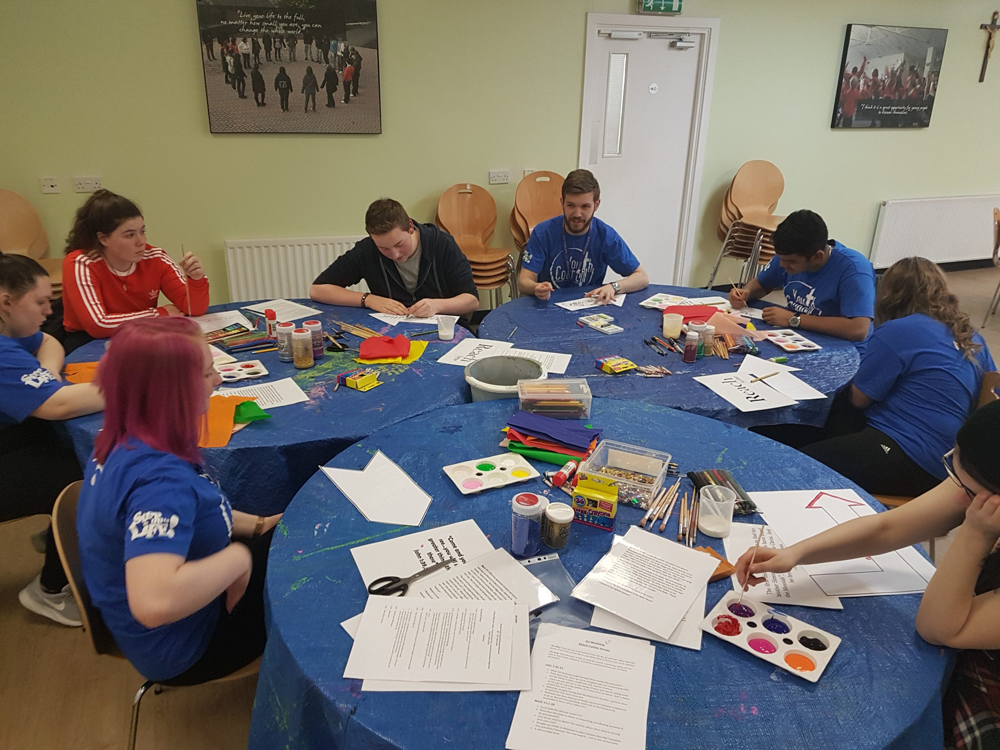

YMT
01
Who we are
Diocese of Hexham & Newcastle
Walking alongside young people since 1994.
We aim to encourage young people into a relationship with Christ and fully into the life of the Church.
As Christ accompanied the disciples on the Emmaus road, we walk alongside young people across the North East — in schools, in parishes, on pilgrimage and at the Emmaus Youth Village in the Derwent Valley.
See what's on ↘1994Founded
90Guests at the Village
05Lodges
02
What's on
Six ways in
Retreats, pilgrimage, a year in community and the Festival.
Whoever you are — a school, a parish, a family or a young person — there is a way in.

Stay, book a weekend, bring a group.
The Village ↗
Play, prayer and community for your school.
School Retreats ↗
Be a youth helper on the pilgrimage.
Lourdes ↗
Live in community for a year.
The Internship ↗
Young people shape what we do next.
Youth Council ↗Music, speakers, prayer, sport — the big one.
Festival ↗
03
The Emmaus Youth Village
Allensford · Consett
Close enough to reach. Far enough to breathe out.

The Emmaus Youth Village opened in 2010 and has been the home of everything we do ever since. Tucked into the Derwent Valley, about fifteen miles from Newcastle and Durham, it is warm, modern and built for community.
Shared meals, late-night conversations and a fire pit at the centre of it all.
Explore the Village ↘
Across the diocese
This is what
This is what
belonging looks like.